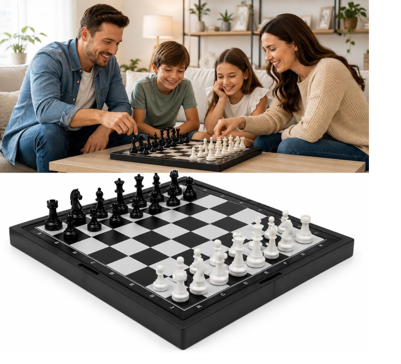

♟️ ESTRATÉGIA

Xadrez
O xadrez transforma cada partida em um desafio. Antes de mover uma peça, você precisa observar, analisar possibilidades e pensar nas consequências das suas decisões.
É uma maneira divertida de exercitar raciocínio, concentração, planejamento e paciência — enquanto você passa bons momentos com amigos ou família.
🧠
Raciocínio
🎯
Concentração
♟️
Estratégia